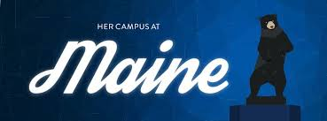
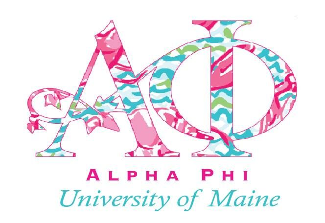

Links to: [Home] [Sports] [Photos] [College Life]
|  |  |
| I have always found a love in writing, and even considered a career as a news broadcaster/ journalist. For now it remains a hobby, and the perfect way to execute my interest in writing in a fun way was by becoming a part of UMaine's Her Campus. | Getting involved in something when coming to College was something very important for me. In highschool I was always in sports, but it was time to find something new.And that is where I found Greek life and became a sister of the Alpha Phi chapter. |